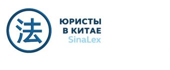

Материал компании

MITEX 2026 · Россия · Стенд 6A603
СинаЛекс, ООО
Карточка проверена 10 ноября 2026, 09:25 · Источник ↗ · Снимок оригинальной карточки ↗
О компании
Наши юристы с 2005 года осуществляют юридическое сопровождение деятельности компаний из России и СНГ на территории материкового Китая, Гонконга, Тайваня. Консультируем российские компании при выходе на китайский рынок, разрешении коммерческих споров на территории КНР и осуществляем защиту их интересов. За это время мы накопили большой опыт по защите интересов наших клиентов на всех этапах коммерческих сделок.
Контакты
Сайт: https://chinalawyers.ruE-mail: vtl137@china-lawyer.ruТелефон: +7 930 035 63 09social: https://rutube.ru/channel/71089743/social: https://m.youtube.com/@chinalawyers-sinalexsocial: https://t.me/SinaLex_Chinalawyers
Все контактные сведения из карточки
Контакты г. Москва, Ленинский проспект 96, ком. 126 Телефон: +7 930 035 63 09 E-mail: vtl137@china-lawyer.ru Адрес: 119415, Россия, Ленинский проспект 96, ком. 126 Веб-сайт: https://chinalawyers.ru E-mail: vtl137@china-lawyer.ru Телефон: +7 930 035 63 09
Все рубрики участника
Зал
- Зал № 6
Участник выставки
- MITEX
Фотографии и изображения
Видео, каталоги и документы
Последние публикации в Telegram
До десяти последних сообщений каждого найденного канала. Оригинал открывается по ссылке.

Зарегистрируй компанию в Гонконге и законно не плати налоги. Гонконгская компания - 0% налогов в России. При продажах через маркетплейсы или сайт, регистрация в Гонконге…
🔥 ПМЭФ-2026: где бизнес находит возможности в Китае Петербургский международный экономический форум — это не только крупнейшая деловая площадка России, но и место, где формируются…

⚡️ Как подать в суд на китайскую компанию? Пошаговая инструкция Судебное разбирательство в Китае начинается задолго до подачи искового заявления. Как определить правильный суд? Какие…

Переговоры с китайским поставщиком: как решить спор без суда Спор с китайским контрагентом — не всегда история про суд. Во многих случаях проблему можно решить…

👨⚖️ Претензия китайскому поставщику: решаем спор без суда Письменная претензия китайскому поставщику — это не просто формальность, а сильный юридический инструмент , который показывает серьезность…

Проверка финансового состояния китайской компании перед судом Суд выигран — а денег нет. Почему так происходит? Перед подачей иска к китайскому поставщику важно не просто…
Регистрация товарного знака в Китае: зачем это нужно? Если вы планируете выход на китайский рынок, регистрацию товарного знака в КНР лучше оформить заранее. В Китае…
📦 Бондовые зоны Китая: как использовать для экспорта, транзита и безопасной передачи товара Бондовые зоны Китая — один из важных инструментов для международной торговли, логистики…

🇨🇳 Как использовать аккредитив с китайским контрагентом Работа с китайскими поставщиками — это не только договор и оплата, но и защита бизнеса от финансовых рисков.…
Как составить договор с китайской компанией? Договор с китайским клиентом — это не формальность, а один из ключевых инструментов защиты бизнеса при международной сделке. В…